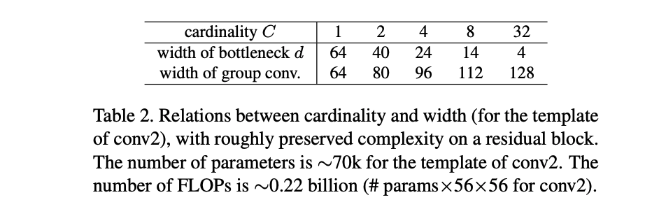
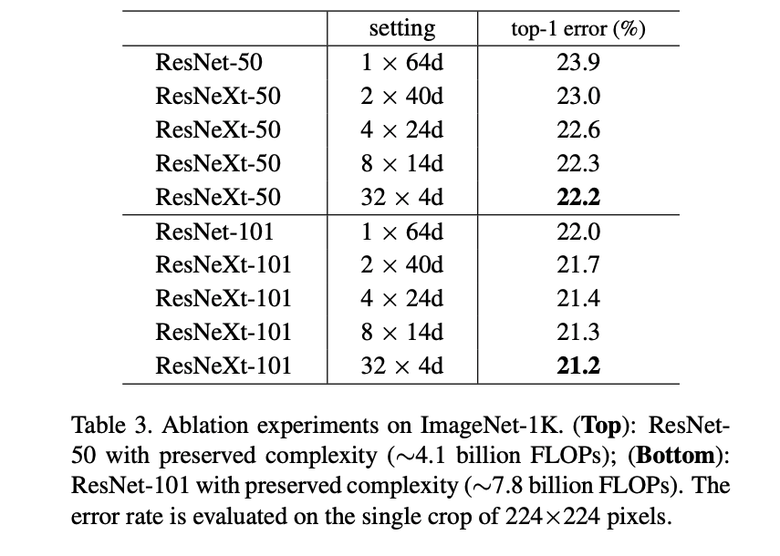
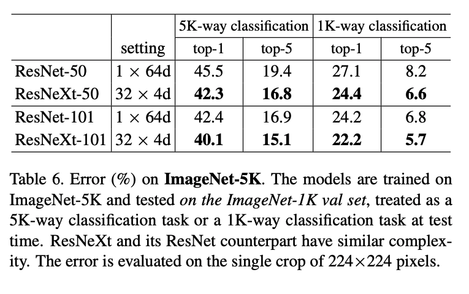

Model Capacity
One major contribution that this paper adds is the limiting of hyperparameter tuning, (and this is based on the template structure they have chosen) so that they can experiment with a subset of parameters, namely the difference in bottleneck width of ResNet vs. the Cardinality of ResNeXt. At the same time, by keeping all the residual blocks of similar parameter complexity, it is an apples to apples comparison if the improvement is a matter of better architecture or simply higher compute.
This is seen in table 2:

Cardinality Vs. Width
The experiments section focuses on the advantages of cardinality, in contrast to the typical width of the ResNet architect.
Table 3 below shows the advantages to increasing cardinality

ResneXt reduces the baseline of ResNet from 23.9% and inceasing cardinality improves upon that baseline. Significantly, ResNeXt has a much lower training error, indicating that the model is producing stronger representations. This means its fundamentally capturing the semantics more strongly. I think this is the most key sentence in the paper, as it shows the benefit the ResNeXt offers.
ResNeXt was also shown to be less dependent on the residual connection as compared to ResNet.
Finally tests on ImageNet 5k (which is a larger dataset with 5k output classes) show that the additional data still improves the model, showing the stronger representation power of ResNeXt.

Conclusion
It seems to me that the ResNeXt architecture is an excellent alternative to the ResNet working with similar complexity and providing some 1-2% benefits over ResNet. This advantage stems from the apparent stronger representation power over the typical ResNet.